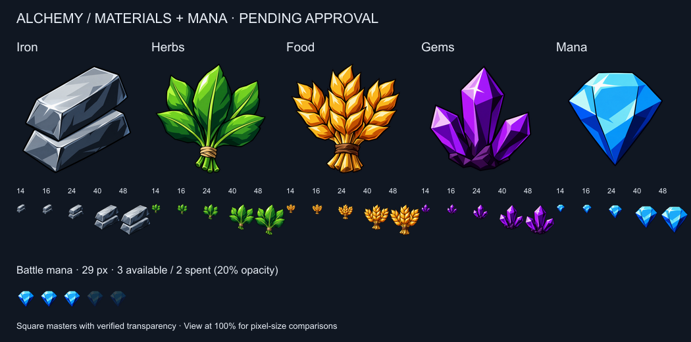
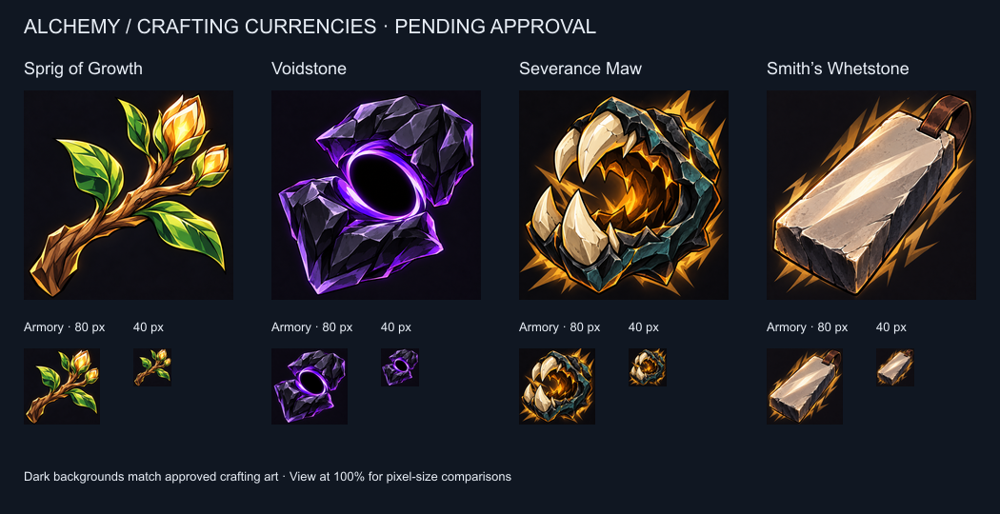

Nine new icons · Pending approval. Obsidian Seal is locked as the approved card back.
Open masters: Iron · Herbs · Food · Gems · Mana · Sprig of Growth · Voidstone · Severance Maw · Smith’s Whetstone · Exact generation prompts
Samples retain their native CSS pixel sizes. Scroll horizontally on smaller windows.

